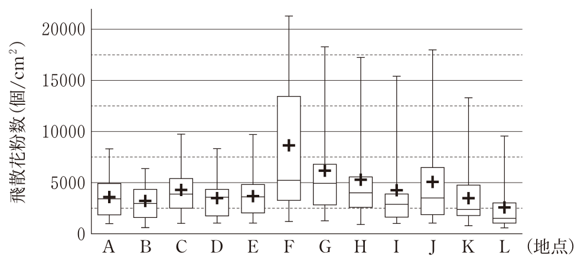
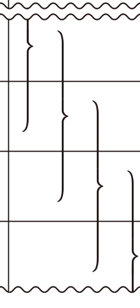
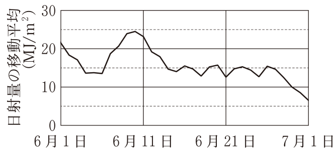
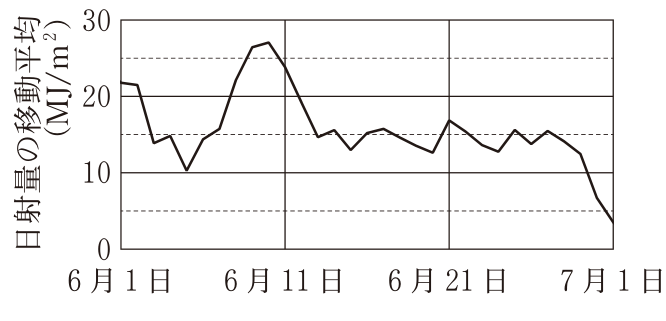
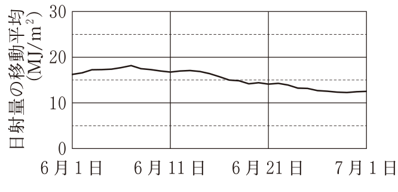
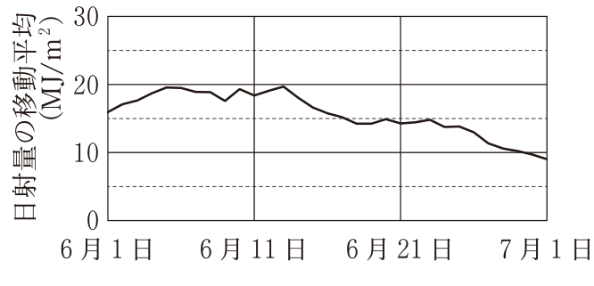
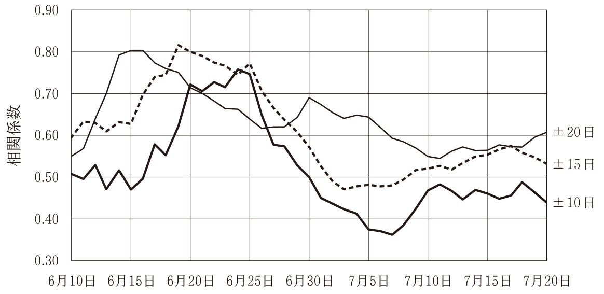
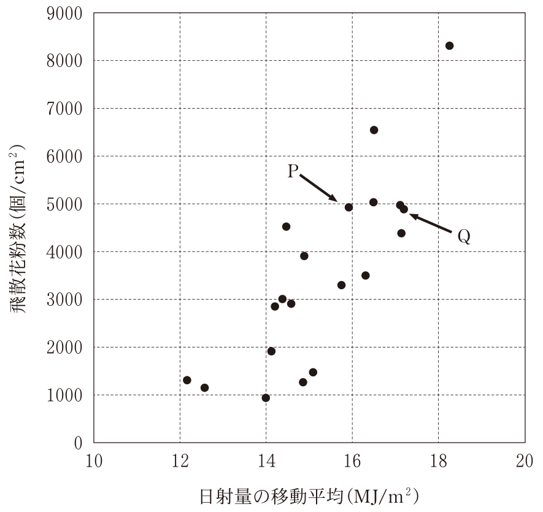

第4問 次の文章を読み，後の問い（問1～5）に答えよ。（配点25）
最近M さんは花粉症に悩まされている。春に飛散する花粉の量が前年の気候に関係することを知ったM さんは，身近な地域で検証したいと考えた。はじめにMさんは，近隣12地点のスギ花粉の飛散花粉数（単位は，個/cm2）について，2005年から20年分のデータを入手した（表1）。
| 年 | A地点 | B地点 | C地点 | D地点 | … | L地点 |
|---|---|---|---|---|---|---|
| 2020 | 1906 | 1624 | 2603 | 1777 | … | 1013 |
| 2021 | 3279 | 2834 | 3804 | 2558 | … | 892 |
| 2022 | 2836 | 2837 | 3068 | 2980 | … | 1732 |
（出典：東京都保健医療局「東京都アレルギー情報navi.」の資料をもとに作成）
問1 次の文章を読み，空欄ア～ウに入れるのに最も適当なものを，後の解答群のうちから一つずつ選べ。
M さんは各地点の飛散花粉数を視覚的に捉えようと考え，20年分すべてのデータをもとに箱ひげ図を作成した（図1）。ここでは平均値を＋で表記している。

この結果，F 地点について「ア」ということが読み取れた。
続いてM さんは，自身が住むA 地点を含めた3地点について表2を作成した。ただし表2の値は，小数点以下を四捨五入している。
M さんは，飛散花粉数が地点・年ごとにこれほど違うことに驚いた。
| A地点 | イ地点 | ウ地点 | |
|---|---|---|---|
| 最小値 | 940 | 551 | 1000 |
| 第1四分位数 | 1795 | 1583 | 1851 |
| 第2四分位数（中央値） | 3382 | 2997 | 3476 |
| 第3四分位数 | 4886 | 4317 | 6497 |
| 最大値 | 8302 | 6399 | 17994 |
| 平均値 | 3545 | 3177 | 5052 |
問2 各年の飛散花粉数は，その前年7月の気温，降水量，そして日射量に関係することを聞いたM さんは，自身が住む地域の平均気温（℃），降水量の合計（mm），月平均全天日射量（MJ/m2）（以下，順に「気温」，「降水量」，「日射量」といい，これらを天候データという。）について，2004年1月から20年分の月別データを入手した（表3）。なお，M（Jメガジュール）はエネルギーの単位である。
| 年月 | 気温 | 降水量 | 日射量 |
|---|---|---|---|
| 2020年1月 | 7.1 | 135 | 8.0 |
| 2020年2月 | 8.3 | 15 | 12.9 |
| 2020年3月 | 10.7 | 131 | 13.9 |
（出典：気象庁）
4月から9月までのそれぞれの月について，20年分の天候データと飛散花粉数の相関係数を求めたところ，表4のようになった。ここで，後の文あ～うについて，表4の7月の相関係数から読み取れるものを〇，読み取れないものを×として，その組合せとして最も適当なものを，後の⓪～⑦のうちから一つ選べ。エ
| 4月 | 5月 | 6月 | 7月 | 8月 | 9月 | |
|---|---|---|---|---|---|---|
| 気温 | 0.15 | 0.07 | 0.18 | 0.56 | 0.08 | 0.17 |
| 降水量 | −0.02 | 0.02 | −0.18 | −0.36 | −0.32 | 0.29 |
| 日射量 | −0.12 | −0.04 | 0.65 | 0.57 | 0.14 | 0.06 |
問3 次の文章を読み，空欄オに入れるのに最も適当なものを，後の解答群のうちから一つ選べ。また，空欄カ・キに当てはまる数字をマークせよ。
表4では，日射量と飛散花粉数の相関係数は6月が最も大きく，次いで7月も比較的大きかった。そこでM さんは，この2ヶ月の間に相関係数がより大きくなる区間があると考え，6～7月の各日における日射量と飛散花粉数の相関係数を求めることにした。この処理のためM さんは月別データと同じ期間の日別の日射量のデータを取得した。
日射量は各日の天気の影響を受けて変動するため，各日とその前後何日かの平均値（これを日射量の移動平均と呼ぶ。）を求め，これを用いることにした。例えば，前後1日（幅±1日）の3日分を対象とした日射量の移動平均の場合，表5のようになる。なお，表5の値は，小数第3位を四捨五入している。
| 日付 | 日射量 | 日射量の移動平均（幅±1日） | |
|---|---|---|---|
| 2020年6月29日 | 25.14 |  | 12.88 |
| 2020年6月30日 | 7.32 | 13.04 | |
| 2020年7月1日 | 6.66 | 13.84 | |
| 2020年7月2日 | 27.55 | 15.32 | |
（出典：気象庁のデータをもとに作成）
M さんは，幅±1日，±2日，±5日，±15日の日射量の移動平均を求めた上で，ある年の6月のグラフを次の図のあ～えのように作成した。これらの中で，幅±5日のグラフはオであり，このグラフにおけるそれぞれの日に対する値は，その日を含むカキ日分を対象とした日射量の移動平均である。




問4 次の文章を読み，空欄ク～コに入れるのに最も適当なものを，後の解答群のうちから一つずつ選べ。
日射量と飛散花粉数の相関係数が6月と7月で高めであったことも考慮し，M さんは幅±10日，±15日，±20日のそれぞれについて，日射量の移動平均と飛散花粉数の相関係数を求め，より適切な移動平均の幅を見つけたいと考えた。相関係数を求める期間としては，移動平均の幅も考慮し，6月10日から7月20日の間とした。処理の結果，図2が得られた。

この結果，日射量の移動平均と飛散花粉数の相関が最も強いのはクを中心とした幅ケの日射量の移動平均であることがわかった。各幅について，相関係数が最大となる日に注目し，その日の日射量の移動平均の対象となる期間を対象期間と呼ぶ。幅±10の対象期間をR10，幅±15の対象期間をR15，幅±20の対象期間をR20とするとき，R10，R15，R20の間の関係について，「コ」ということがわかった。
問5 次の文章を読み，空欄サ・シに入れるのに最も適当なものを，後の解答群のうちから一つずつ選べ。
続いてM さんは，各年のクを中心とした幅ケの日射量の移動平均と，その翌年の飛散花粉数との関係を散布図にし（図3），回帰直線を求めた。その回帰直線の方程式は，次のとおりである。
（飛散花粉数）＝1011．3×（日射量の移動平均）－11911

M さんは今年の春の飛散花粉数を予測したいと考えた。昨年のクについて，日射量の移動平均を求めた結果が17．2MJ/m2であったため，飛散花粉数はおおよそサ個/cm2と推測された。ここで，図3中の点P と点Qで示されている飛散花粉数の実測値について，それぞれの点の日射量の移動平均から回帰直線を用いて求められる予測値と比較したところ，「シ」ということがわかった。
ここまでの分析をふまえて，M さんは今から花粉症の対策を考えることにした。